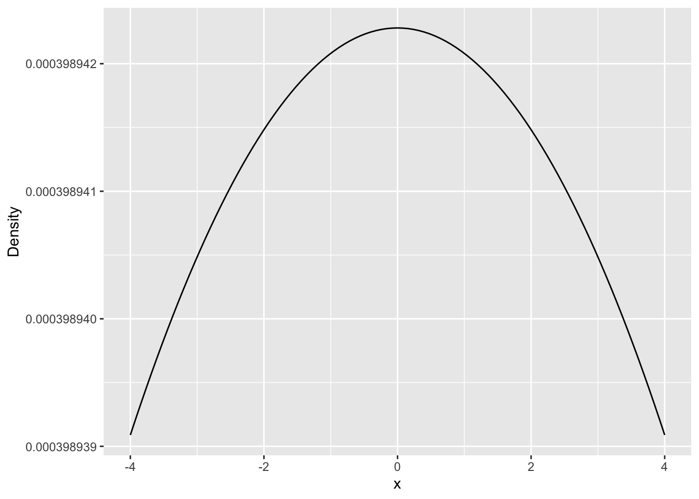
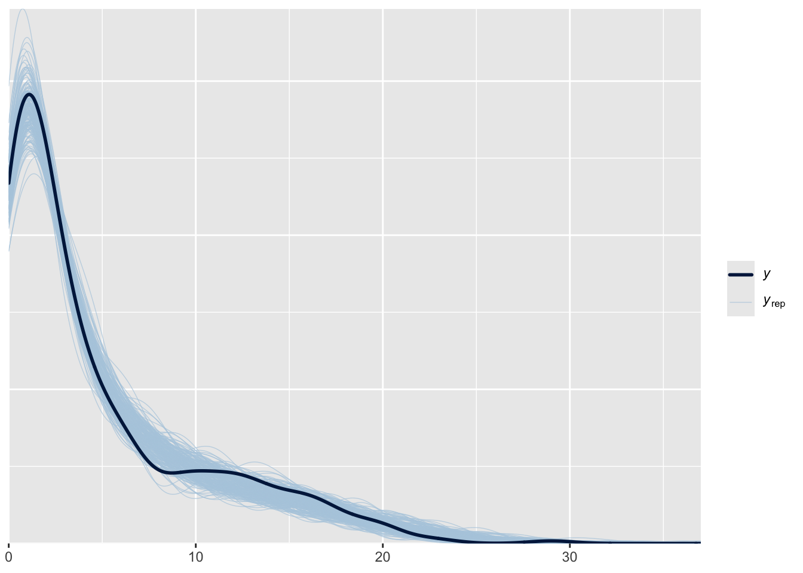
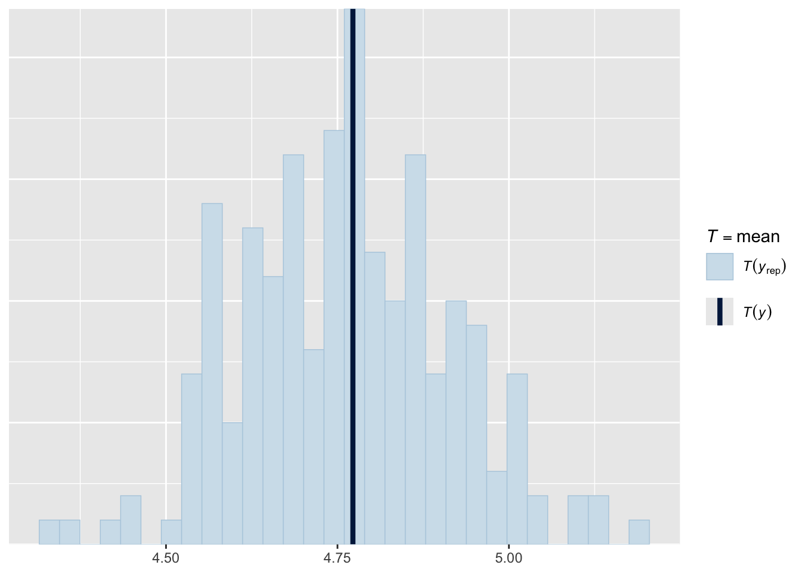

# set seed so we all have the same data
set.seed(123)
# random numeric data for explanatory variable
x <- runif(400, 0, 1)
# log(m) is the link function so mu = exp(...)
mu <- exp(-1 + 4 * x)
# draw random Poisson data based on mu responding to x
y <- rpois(length(x), mu)
# combine in one data object
dat <- data.frame(x, y)34 Sample size considerations and posterior predictive checks
This lab will guide you through sample size considerations and posterior predictive checks. You can download the template .qmd file for this lab here:
The template will prompt you to work through the following sections.
34.1 Simulating a familiar model…with different sample sizes
We’ll continue with our Poisson GLM, but we’re going to mix things up by also introducing differences in sample size. Here again is the code from last lab
Now let’s also create a subsample of those data with only 40 samples. Turns out dplyr has a convenient funciton to do this slice_sample
# again set a seed so everyone works with the same data
set.seed(1)
dat_small <- slice_sample(dat, prop = 0.1)34.2 Evaluating the effect of sample size on Bayesian inference
Now with two data sets of very different size, but coming from the same process, we can evaluate the effect of sample size on Bayesian inference. Let’s fit the same model to each data set.
# just like in the previous lab, making sure we
# have sufficient warmup
mod <- brm(y ~ x,
data = dat,
family = poisson(),
prior = c(prior(normal(0, 1000), class = Intercept),
prior(normal(0, 1000), class = b)),
iter = 1000,
warmup = 500)Compiling Stan program...Trying to compile a simple C fileRunning /Library/Frameworks/R.framework/Resources/bin/R CMD SHLIB foo.c
using C compiler: ‘Apple clang version 16.0.0 (clang-1600.0.26.6)’
using SDK: ‘MacOSX15.2.sdk’
clang -arch arm64 -std=gnu2x -I"/Library/Frameworks/R.framework/Resources/include" -DNDEBUG -I"/Library/Frameworks/R.framework/Versions/4.5-arm64/Resources/library/Rcpp/include/" -I"/Library/Frameworks/R.framework/Versions/4.5-arm64/Resources/library/RcppEigen/include/" -I"/Library/Frameworks/R.framework/Versions/4.5-arm64/Resources/library/RcppEigen/include/unsupported" -I"/Library/Frameworks/R.framework/Versions/4.5-arm64/Resources/library/BH/include" -I"/Library/Frameworks/R.framework/Versions/4.5-arm64/Resources/library/StanHeaders/include/src/" -I"/Library/Frameworks/R.framework/Versions/4.5-arm64/Resources/library/StanHeaders/include/" -I"/Library/Frameworks/R.framework/Versions/4.5-arm64/Resources/library/RcppParallel/include/" -I"/Library/Frameworks/R.framework/Versions/4.5-arm64/Resources/library/rstan/include" -DEIGEN_NO_DEBUG -DBOOST_DISABLE_ASSERTS -DBOOST_PENDING_INTEGER_LOG2_HPP -DSTAN_THREADS -DUSE_STANC3 -DSTRICT_R_HEADERS -DBOOST_PHOENIX_NO_VARIADIC_EXPRESSION -D_HAS_AUTO_PTR_ETC=0 -include '/Library/Frameworks/R.framework/Versions/4.5-arm64/Resources/library/StanHeaders/include/stan/math/prim/fun/Eigen.hpp' -D_REENTRANT -DRCPP_PARALLEL_USE_TBB=1 -I/opt/R/arm64/include -fPIC -falign-functions=64 -Wall -g -O2 -c foo.c -o foo.o
In file included from <built-in>:1:
In file included from /Library/Frameworks/R.framework/Versions/4.5-arm64/Resources/library/StanHeaders/include/stan/math/prim/fun/Eigen.hpp:22:
In file included from /Library/Frameworks/R.framework/Versions/4.5-arm64/Resources/library/RcppEigen/include/Eigen/Dense:1:
In file included from /Library/Frameworks/R.framework/Versions/4.5-arm64/Resources/library/RcppEigen/include/Eigen/Core:19:
/Library/Frameworks/R.framework/Versions/4.5-arm64/Resources/library/RcppEigen/include/Eigen/src/Core/util/Macros.h:679:10: fatal error: 'cmath' file not found
679 | #include <cmath>
| ^~~~~~~
1 error generated.
make: *** [foo.o] Error 1Start sampling
SAMPLING FOR MODEL 'anon_model' NOW (CHAIN 1).
Chain 1:
Chain 1: Gradient evaluation took 2.5e-05 seconds
Chain 1: 1000 transitions using 10 leapfrog steps per transition would take 0.25 seconds.
Chain 1: Adjust your expectations accordingly!
Chain 1:
Chain 1:
Chain 1: Iteration: 1 / 1000 [ 0%] (Warmup)
Chain 1: Iteration: 100 / 1000 [ 10%] (Warmup)
Chain 1: Iteration: 200 / 1000 [ 20%] (Warmup)
Chain 1: Iteration: 300 / 1000 [ 30%] (Warmup)
Chain 1: Iteration: 400 / 1000 [ 40%] (Warmup)
Chain 1: Iteration: 500 / 1000 [ 50%] (Warmup)
Chain 1: Iteration: 501 / 1000 [ 50%] (Sampling)
Chain 1: Iteration: 600 / 1000 [ 60%] (Sampling)
Chain 1: Iteration: 700 / 1000 [ 70%] (Sampling)
Chain 1: Iteration: 800 / 1000 [ 80%] (Sampling)
Chain 1: Iteration: 900 / 1000 [ 90%] (Sampling)
Chain 1: Iteration: 1000 / 1000 [100%] (Sampling)
Chain 1:
Chain 1: Elapsed Time: 0.021 seconds (Warm-up)
Chain 1: 0.021 seconds (Sampling)
Chain 1: 0.042 seconds (Total)
Chain 1:
SAMPLING FOR MODEL 'anon_model' NOW (CHAIN 2).
Chain 2:
Chain 2: Gradient evaluation took 5e-06 seconds
Chain 2: 1000 transitions using 10 leapfrog steps per transition would take 0.05 seconds.
Chain 2: Adjust your expectations accordingly!
Chain 2:
Chain 2:
Chain 2: Iteration: 1 / 1000 [ 0%] (Warmup)
Chain 2: Iteration: 100 / 1000 [ 10%] (Warmup)
Chain 2: Iteration: 200 / 1000 [ 20%] (Warmup)
Chain 2: Iteration: 300 / 1000 [ 30%] (Warmup)
Chain 2: Iteration: 400 / 1000 [ 40%] (Warmup)
Chain 2: Iteration: 500 / 1000 [ 50%] (Warmup)
Chain 2: Iteration: 501 / 1000 [ 50%] (Sampling)
Chain 2: Iteration: 600 / 1000 [ 60%] (Sampling)
Chain 2: Iteration: 700 / 1000 [ 70%] (Sampling)
Chain 2: Iteration: 800 / 1000 [ 80%] (Sampling)
Chain 2: Iteration: 900 / 1000 [ 90%] (Sampling)
Chain 2: Iteration: 1000 / 1000 [100%] (Sampling)
Chain 2:
Chain 2: Elapsed Time: 0.022 seconds (Warm-up)
Chain 2: 0.02 seconds (Sampling)
Chain 2: 0.042 seconds (Total)
Chain 2:
SAMPLING FOR MODEL 'anon_model' NOW (CHAIN 3).
Chain 3:
Chain 3: Gradient evaluation took 6e-06 seconds
Chain 3: 1000 transitions using 10 leapfrog steps per transition would take 0.06 seconds.
Chain 3: Adjust your expectations accordingly!
Chain 3:
Chain 3:
Chain 3: Iteration: 1 / 1000 [ 0%] (Warmup)
Chain 3: Iteration: 100 / 1000 [ 10%] (Warmup)
Chain 3: Iteration: 200 / 1000 [ 20%] (Warmup)
Chain 3: Iteration: 300 / 1000 [ 30%] (Warmup)
Chain 3: Iteration: 400 / 1000 [ 40%] (Warmup)
Chain 3: Iteration: 500 / 1000 [ 50%] (Warmup)
Chain 3: Iteration: 501 / 1000 [ 50%] (Sampling)
Chain 3: Iteration: 600 / 1000 [ 60%] (Sampling)
Chain 3: Iteration: 700 / 1000 [ 70%] (Sampling)
Chain 3: Iteration: 800 / 1000 [ 80%] (Sampling)
Chain 3: Iteration: 900 / 1000 [ 90%] (Sampling)
Chain 3: Iteration: 1000 / 1000 [100%] (Sampling)
Chain 3:
Chain 3: Elapsed Time: 0.022 seconds (Warm-up)
Chain 3: 0.018 seconds (Sampling)
Chain 3: 0.04 seconds (Total)
Chain 3:
SAMPLING FOR MODEL 'anon_model' NOW (CHAIN 4).
Chain 4:
Chain 4: Gradient evaluation took 5e-06 seconds
Chain 4: 1000 transitions using 10 leapfrog steps per transition would take 0.05 seconds.
Chain 4: Adjust your expectations accordingly!
Chain 4:
Chain 4:
Chain 4: Iteration: 1 / 1000 [ 0%] (Warmup)
Chain 4: Iteration: 100 / 1000 [ 10%] (Warmup)
Chain 4: Iteration: 200 / 1000 [ 20%] (Warmup)
Chain 4: Iteration: 300 / 1000 [ 30%] (Warmup)
Chain 4: Iteration: 400 / 1000 [ 40%] (Warmup)
Chain 4: Iteration: 500 / 1000 [ 50%] (Warmup)
Chain 4: Iteration: 501 / 1000 [ 50%] (Sampling)
Chain 4: Iteration: 600 / 1000 [ 60%] (Sampling)
Chain 4: Iteration: 700 / 1000 [ 70%] (Sampling)
Chain 4: Iteration: 800 / 1000 [ 80%] (Sampling)
Chain 4: Iteration: 900 / 1000 [ 90%] (Sampling)
Chain 4: Iteration: 1000 / 1000 [100%] (Sampling)
Chain 4:
Chain 4: Elapsed Time: 0.022 seconds (Warm-up)
Chain 4: 0.017 seconds (Sampling)
Chain 4: 0.039 seconds (Total)
Chain 4: # only difference is using smaller sample size data set
mod_small <- brm(y ~ x,
data = dat_small,
family = poisson(),
prior = c(prior(normal(0, 1000), class = Intercept),
prior(normal(0, 1000), class = b)),
iter = 1000,
warmup = 500)Compiling Stan program...
Trying to compile a simple C fileRunning /Library/Frameworks/R.framework/Resources/bin/R CMD SHLIB foo.c
using C compiler: ‘Apple clang version 16.0.0 (clang-1600.0.26.6)’
using SDK: ‘MacOSX15.2.sdk’
clang -arch arm64 -std=gnu2x -I"/Library/Frameworks/R.framework/Resources/include" -DNDEBUG -I"/Library/Frameworks/R.framework/Versions/4.5-arm64/Resources/library/Rcpp/include/" -I"/Library/Frameworks/R.framework/Versions/4.5-arm64/Resources/library/RcppEigen/include/" -I"/Library/Frameworks/R.framework/Versions/4.5-arm64/Resources/library/RcppEigen/include/unsupported" -I"/Library/Frameworks/R.framework/Versions/4.5-arm64/Resources/library/BH/include" -I"/Library/Frameworks/R.framework/Versions/4.5-arm64/Resources/library/StanHeaders/include/src/" -I"/Library/Frameworks/R.framework/Versions/4.5-arm64/Resources/library/StanHeaders/include/" -I"/Library/Frameworks/R.framework/Versions/4.5-arm64/Resources/library/RcppParallel/include/" -I"/Library/Frameworks/R.framework/Versions/4.5-arm64/Resources/library/rstan/include" -DEIGEN_NO_DEBUG -DBOOST_DISABLE_ASSERTS -DBOOST_PENDING_INTEGER_LOG2_HPP -DSTAN_THREADS -DUSE_STANC3 -DSTRICT_R_HEADERS -DBOOST_PHOENIX_NO_VARIADIC_EXPRESSION -D_HAS_AUTO_PTR_ETC=0 -include '/Library/Frameworks/R.framework/Versions/4.5-arm64/Resources/library/StanHeaders/include/stan/math/prim/fun/Eigen.hpp' -D_REENTRANT -DRCPP_PARALLEL_USE_TBB=1 -I/opt/R/arm64/include -fPIC -falign-functions=64 -Wall -g -O2 -c foo.c -o foo.o
In file included from <built-in>:1:
In file included from /Library/Frameworks/R.framework/Versions/4.5-arm64/Resources/library/StanHeaders/include/stan/math/prim/fun/Eigen.hpp:22:
In file included from /Library/Frameworks/R.framework/Versions/4.5-arm64/Resources/library/RcppEigen/include/Eigen/Dense:1:
In file included from /Library/Frameworks/R.framework/Versions/4.5-arm64/Resources/library/RcppEigen/include/Eigen/Core:19:
/Library/Frameworks/R.framework/Versions/4.5-arm64/Resources/library/RcppEigen/include/Eigen/src/Core/util/Macros.h:679:10: fatal error: 'cmath' file not found
679 | #include <cmath>
| ^~~~~~~
1 error generated.
make: *** [foo.o] Error 1Start sampling
SAMPLING FOR MODEL 'anon_model' NOW (CHAIN 1).
Chain 1:
Chain 1: Gradient evaluation took 2e-05 seconds
Chain 1: 1000 transitions using 10 leapfrog steps per transition would take 0.2 seconds.
Chain 1: Adjust your expectations accordingly!
Chain 1:
Chain 1:
Chain 1: Iteration: 1 / 1000 [ 0%] (Warmup)
Chain 1: Iteration: 100 / 1000 [ 10%] (Warmup)
Chain 1: Iteration: 200 / 1000 [ 20%] (Warmup)
Chain 1: Iteration: 300 / 1000 [ 30%] (Warmup)
Chain 1: Iteration: 400 / 1000 [ 40%] (Warmup)
Chain 1: Iteration: 500 / 1000 [ 50%] (Warmup)
Chain 1: Iteration: 501 / 1000 [ 50%] (Sampling)
Chain 1: Iteration: 600 / 1000 [ 60%] (Sampling)
Chain 1: Iteration: 700 / 1000 [ 70%] (Sampling)
Chain 1: Iteration: 800 / 1000 [ 80%] (Sampling)
Chain 1: Iteration: 900 / 1000 [ 90%] (Sampling)
Chain 1: Iteration: 1000 / 1000 [100%] (Sampling)
Chain 1:
Chain 1: Elapsed Time: 0.006 seconds (Warm-up)
Chain 1: 0.005 seconds (Sampling)
Chain 1: 0.011 seconds (Total)
Chain 1:
SAMPLING FOR MODEL 'anon_model' NOW (CHAIN 2).
Chain 2:
Chain 2: Gradient evaluation took 1e-06 seconds
Chain 2: 1000 transitions using 10 leapfrog steps per transition would take 0.01 seconds.
Chain 2: Adjust your expectations accordingly!
Chain 2:
Chain 2:
Chain 2: Iteration: 1 / 1000 [ 0%] (Warmup)
Chain 2: Iteration: 100 / 1000 [ 10%] (Warmup)
Chain 2: Iteration: 200 / 1000 [ 20%] (Warmup)
Chain 2: Iteration: 300 / 1000 [ 30%] (Warmup)
Chain 2: Iteration: 400 / 1000 [ 40%] (Warmup)
Chain 2: Iteration: 500 / 1000 [ 50%] (Warmup)
Chain 2: Iteration: 501 / 1000 [ 50%] (Sampling)
Chain 2: Iteration: 600 / 1000 [ 60%] (Sampling)
Chain 2: Iteration: 700 / 1000 [ 70%] (Sampling)
Chain 2: Iteration: 800 / 1000 [ 80%] (Sampling)
Chain 2: Iteration: 900 / 1000 [ 90%] (Sampling)
Chain 2: Iteration: 1000 / 1000 [100%] (Sampling)
Chain 2:
Chain 2: Elapsed Time: 0.006 seconds (Warm-up)
Chain 2: 0.005 seconds (Sampling)
Chain 2: 0.011 seconds (Total)
Chain 2:
SAMPLING FOR MODEL 'anon_model' NOW (CHAIN 3).
Chain 3:
Chain 3: Gradient evaluation took 1e-06 seconds
Chain 3: 1000 transitions using 10 leapfrog steps per transition would take 0.01 seconds.
Chain 3: Adjust your expectations accordingly!
Chain 3:
Chain 3:
Chain 3: Iteration: 1 / 1000 [ 0%] (Warmup)
Chain 3: Iteration: 100 / 1000 [ 10%] (Warmup)
Chain 3: Iteration: 200 / 1000 [ 20%] (Warmup)
Chain 3: Iteration: 300 / 1000 [ 30%] (Warmup)
Chain 3: Iteration: 400 / 1000 [ 40%] (Warmup)
Chain 3: Iteration: 500 / 1000 [ 50%] (Warmup)
Chain 3: Iteration: 501 / 1000 [ 50%] (Sampling)
Chain 3: Iteration: 600 / 1000 [ 60%] (Sampling)
Chain 3: Iteration: 700 / 1000 [ 70%] (Sampling)
Chain 3: Iteration: 800 / 1000 [ 80%] (Sampling)
Chain 3: Iteration: 900 / 1000 [ 90%] (Sampling)
Chain 3: Iteration: 1000 / 1000 [100%] (Sampling)
Chain 3:
Chain 3: Elapsed Time: 0.006 seconds (Warm-up)
Chain 3: 0.006 seconds (Sampling)
Chain 3: 0.012 seconds (Total)
Chain 3:
SAMPLING FOR MODEL 'anon_model' NOW (CHAIN 4).
Chain 4:
Chain 4: Gradient evaluation took 1e-06 seconds
Chain 4: 1000 transitions using 10 leapfrog steps per transition would take 0.01 seconds.
Chain 4: Adjust your expectations accordingly!
Chain 4:
Chain 4:
Chain 4: Iteration: 1 / 1000 [ 0%] (Warmup)
Chain 4: Iteration: 100 / 1000 [ 10%] (Warmup)
Chain 4: Iteration: 200 / 1000 [ 20%] (Warmup)
Chain 4: Iteration: 300 / 1000 [ 30%] (Warmup)
Chain 4: Iteration: 400 / 1000 [ 40%] (Warmup)
Chain 4: Iteration: 500 / 1000 [ 50%] (Warmup)
Chain 4: Iteration: 501 / 1000 [ 50%] (Sampling)
Chain 4: Iteration: 600 / 1000 [ 60%] (Sampling)
Chain 4: Iteration: 700 / 1000 [ 70%] (Sampling)
Chain 4: Iteration: 800 / 1000 [ 80%] (Sampling)
Chain 4: Iteration: 900 / 1000 [ 90%] (Sampling)
Chain 4: Iteration: 1000 / 1000 [100%] (Sampling)
Chain 4:
Chain 4: Elapsed Time: 0.006 seconds (Warm-up)
Chain 4: 0.005 seconds (Sampling)
Chain 4: 0.011 seconds (Total)
Chain 4: Now we’re going to visually compare the posterior to prior for each fitted model object. We saw last lab how to visualize the posterior. We also saw how to visualize a random sample from the prior, but this time let’s visualize the actual probability density function.
ggplot(data.frame(x = c(-4, 4)), aes(x = x)) +
stat_function(fun = dnorm,
args = list(sd = 1000)) +
labs(x = "x", y = "Density")
To compare posterior and prior, plot the posterior first (after having extracted it with as_draws_df, i.e., don’t use mcmc_hist). Then you can add the prior with stat_function. Adjust the x-axis limits so that we see more of the number line.
Make a plot comparing prior to posterior for the b_x term of the model fit on the full data and the b_x term of the model fit on the smaller data set.
Comparing those two plots, what do you notice? Which one shows a bigger difference between the prior and posterior?
34.3 Posterior predictive checks
Like with any model inference approach, we should check if our model is actually doing a good job predicting the data. In the frequentist framework we can use likelihood ratio test and AIC, among other methods, for this task. In the Bayesian framework we can use posterior predictive checks.
The idea behind posterior predictive checks is to sample parameter values from the posterior, simulate response data (the \(y\)) from the model with those parameter values, then compare the simulated data to the real data. Like with MCMC diagnostics, there are a number of helpful visual checks. Let’s see those in action.
First we use posterior_predict to generate data simulated from the model
# `ndraws` is an option argument, defaults to all
# posterior samples if we don't specify
mod_ppc <- posterior_predict(mod, ndraws = 200)The output of posterior_predict is a matrix, each row is one simulation of the response variable.
Now we can visually compare the real data to the simulated data using functions from bayesplot.
ppc_dens_overlay(dat$y, mod_ppc)
This plot shows the real data as the thick line and the 200 simulated data sets as lighter and thinner lines. What is your interpretation? Does the model (represented by simulated data) closely match the real data?
It can also be helpful to compare summary statistics of the real and simulated data like the mean and variance. For that task we use ppc_stat.
ppc_stat(dat$y, mod_ppc, stat = "mean")Note: in most cases the default test statistic 'mean' is too weak to detect anything of interest.`stat_bin()` using `bins = 30`. Pick better value `binwidth`.
What is your interpretation? Are the means of the simulated data in agreement with the observed mean of the real data?
For Poisson models it is generally a good idea to do posterior predictive checks on both the mean and variance because Poisson assumes these two metrics are equal, and we know ecological data can often violate that assumption. Use ppc_stat to compare real and simulated data in terms of variance (var is the summary statistic function you need). Interpret the results: is Poisson an adequate choice for our model and data?